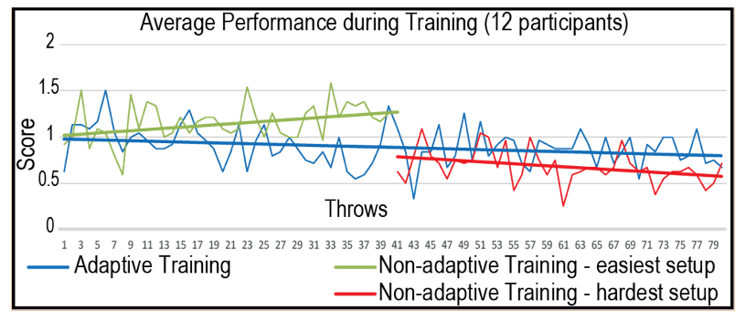
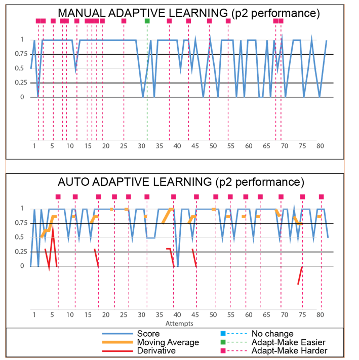

6.810 Engineering Interactive Technologies (fall 2018)
User Study
Upload 1 (Nov. 21, 2.30pm): upload all documents required to run the study to your google drive
We will do this in class today + have another group work time next wednesday in class (Nov 21).
- upload certificate of human subjects training as pdf
- consent form you will give to participants
- video release form you will give to participants
- pre-study questionnaire you will give to participants
- user study protocol you will use
- post-study questionnaire you will give to participants
- no study results required yet
Upload 2 (Nov. 30, 1pm, user study milestone): upload your user study results to google drive
- signed consent form from each participant (scan original)
- signed video-release from each participant (scan original)
- filled out pre-study questionnaire from each participant (scan original)
- photos / video material of each participant doing the study
- filled out post-study questionnaire from each participant (scan original)
- notes made during experiment, any insights you had & other qualitative feedback (e.g. any extra comments you collected not in the questionnaires)
- (optional) quantitative results
- After scanning, give the originals (consent form, video release form, pre- + post study questionnaire) to your TA.
Goal for Today:
The goal for today is to get started on designing + preparing your user study.
The teaching team is around if you have any questions.
Types of User Studies for Class
Quantitative + Qualitative User Study with 2 Conditions
You will run this type of user study for your project. The two conditions will be a static version of your prototype (adaptation disabled) and the adaptive version of your prototype. Since we are doing the user study for the first time this year, only the qualitative feedback (responses from participants) will be required. However, if you can plot some quantitative data (e.g. a chart showing sensor data and when the prototype adapted, or showing that with your prototype participants at the end made less mistakes when playing the piano piece or throwing the ball, that'd be great to see as well, but it's optional).Fully Implemented vs. Wizard of Oz
While the study above can be run with a fully implemented prototype, it could also be run as a so called Wizard of Oz study. This is a study, in which the experimenter (aka you) simulates what the computer would do. Often, the experimenter 'hides behind the curtain', i.e. the subject does not know that it's all manual and nothing is automated yet. This is useful for early stage prototyping, but even more so to evaluate the effects of technology that is not quite there yet.For instance, consider natural language processing and speech interfaces. A test participant may think they are communicating with a computer using speech, when in fact an experimenter behind the curtain is entering the words manually and records a response manually, then replays it to the particiant. This can provide important insights into how speech interfaces should be designed even though the technology is not perfectly there yet.
Another example from my own experience: When I was an undergrad, we were planning to implement an interactive dance floor with a projection on the floor that would adjust, e.g. based on your dance style (more expressive dancing => bigger patterns, brighter colors) to encourage people to dance more and to not stand around. In addition, the visualization would change based on your number of friends present in the club and where they were on the dance floor so you could find them more easily in the crowd. To see what potential usability problems could appear, we mounted a projector on the ceiling but all visuals were manually controlled by ourselves (we had a large number of pre-defined patterns prepared and could fade them in and out individually). Note that we still required participants to wear, e.g. a heart rate sensor (although we didn't use the data) to make it feel 'real' to them, e.g. they thought the entire time the system was already working. We then used the user feedback to implement our real prototype and ran another study later with the full implementation.
90% of you will run the regular study above. For a few teams who have projects that are more difficult to test with other users, we will ask you to run a wizard of oz study. We will reach out to you individually. If you don't hear from us within the first 10 minutes, assume you run the normal study.
Step 1: Take the Human-Subjects Training
(do it some time after class, it takes ca. 1 hour)
Before running a user study involving human subjects at MIT,
everyone has to take the training course: Research Involving Human Subjects.
Once you have done the course, export the certificate you receive at the end and upload it to your google drive as a .pdf.
Step 2: Getting your Study Approved
Before you can run your study, you have to get it approved by an IRB (Institutional Review Board). The IRB is an administrative body established to protect the rights and welfare of human research subjects recruited to participate in research activities. At MIT, this is done through COUHES (Committee on the Use of Humans as Experimental Subjects).
Creating an IRB application is a ton of work since they want to know many details about the study. After you submit the study description, the IRB approval can take several weeks or even months. Since we are doing a small study in class and not for research, we will skip this step, but I recommend you look at the IRB documents below for the adaptive learning basketball study to get an idea how a full user study request looks like.
IRB Documents for Adaptive Learning Basketball Study:
- IRB Application Form [PDF]
- User Study Design [PDF]
- Consent Form [PDF | Word]
- Video Release Form [PDF | Word]
- Pre-study Questionnaire [PDF | Word]
- Post-study Questionnaire [PDF | Word]
- Recruitment Flyer [PDF]
If everything is according to the IRB protocols, you will receive an IRB Approval Notice and you are ready to start the study. Again we will not do this for 6.810 since you are doing a very small study in the context of a class and not for a research project but the documents above might come in handy when you plan your study.
Step 3: Prepare Consent Form
Let's prepare your user study documents.
The consent form is used to make sure participants know their rights in the user study (i.e. they can quit any time) and they are aware of all the potential risks. Your study will be low risks, so this is less of a concern, but you still want to make sure all participants are on the same page.
Task: Prepare your consent form (Example file here: ConsentForm.doc). Feel free to customize and remove sentences you feel do not fit what you are doing. If you are not sure what to put in the 'Procedure Section' you can leave it for now and get back to it later. We recommend putting all your user study files in your google drive right away.
Step 4: Prepare Your Video Release Form
We ask you to take pictures of your user study and if possible it would be good to capture some video as well.
The video release form that participants sign will allow you to do this.
Task: Prepare your video release form (Example file here: VideoReleaseForm.doc). You may want to think about how to customize it: Will you only take pictures for class? Then ask for this permission. Will you also put the pictures on your personal website? Then you need to include this as well.
Step 5: Prepare Pre-Study Questionnaire
It is a good idea to collect a few data points about participants before they start the study. However, you can never ask for participants *name* since that would break anonymity. Always label participants as p1, p2, p3 etc.
Task: Prepare your pre-study questionnaire (Example File is here: pre-study questionnaire.docx). Our questionnaire includes: age, gender, height, dominant hand (throw with left or right hand?), prior experience with basketball, prior experience with other ball sports).
Step 6: Decide on Task
Now would be a good time to decide on the actual study task.
Make sure to discuss this with your TA:
- What would be your adaptive condition?
- What would be your static condition?
- What would be the test task at the end?
Here's the example from our study:
Adaptive Condition: In the adaptive setup, participants started by throwing balls in the easiest setting (lowest basket height and largest hoop size) and gradually progressed to the harder settings, i.e. the tool adapted to the next harder setting once participants reached a certain performance level.
Static Condition: In the static setup, participant attempted 40 throws for the easiest setting (i.e., largest hoop, lowest basket height) and then another 40 throws for the hardest setting (i.e., the smallest hoop and the highest basket height). (comment: you could also decide to only give them one of the settings, e.g. only the hardest or only the easiest).
Test Task: At the beginning of the study and after each condition, we tested participants’ current skill level by asking them to attempt 20 throws in the hardest setup. At the end of the study, we collected qualitative feedback asking participants to compare their experience with the static setup to their experience with the adaptive setup.
Step 7: Prepare Post-Study Questionnaire
It is a good idea to have participants fill in a post-study questinnaire after the study.
When we run studies, we typically have participants fill out the questionnaire by themselves first, at the end when they give us the questionnaire back we have another 3-5 minute de-briefing, i.e. we ask them to elaborate verbally on the points they jotted down (very useful to get more context around the comments on the questionnaire + some people don't like to write a lot but love to speak with you about the prototype). Also most people have terrible hand-writing, now is the moment to find out what this word really meant you can't read before the participant disappears.
Task: Prepare your post-study questionnaire (Example file is here: post-study questionnaire.doc). Our questionnaire includes: if you got the change to keep practicing, would you choose the adaptive setup or the traditional setup? what made you come to this conclusion? anything we can improve with the system? any specific moments in the learning process you found memorable?
Step 8: Prepare Study Protocol
Once you have all the documents + decided on a task, you are ready to write the detailed study protocol.
You can find the study protocol we used in the full scale adaptive basketball study here User Study Design.pdf. You don't have to do all these steps but we at least would like to see that all participants tried both the static and the adaptive version and gave you some feedback afterwards.
When your participants do the study, you need to make sure:
- everyone is getting the same amount of information
- everyone does the task in exactly the same way
Therefore, you should stick to your study protocol as much as possible.
- Rough Steps for Protocol:
- Welcome the participant.
- Explain very broadly what the study is about ('in this study we test a new basketball prototype').
- Have participants agree that they want to participate by signing the consent form. Re-assure them they can withdraw any moment in the study without consequences.
- ask them if it’s ok that you are filming them and taking pictures and then have them sign the video release form
- give participants the pre-study questionnaire
- assign participants randomly to one of the two conditions (adaptive or static), this avoids ordering effects
- demonstrate the prototype for the chosen condition yourself, explain what it does (this puts participants at ease since they now have a better idea what they are supposed to be doing)
- train the participant in the selected condition: give participants time to familiarize themselves with the interface. For instance, in our study they could throw some balls at the basket until they felt comfortable.
- have participants do the actual task
- assign participants to the other condition
- train the participant in this new condition
- have participants do the actual task
- have participants fill out the post-study questionnaire
- debrief, ask follow up questions about interesting comments on the questionnaire
- give them a chocolate bar or some flowers for their time
Task: Write down a step-by-step procedure (study protocol) what you want to tell and show to participants, so you always do exactly the same steps for everyone. Also make sure to write down any technical settings you have to change in your prototype in case it's necessary.
Step 9: Prepare Data-Logging (optional)
In case you decide to collect some quantitative data (e.g. sensor data for each participant and time of adaptation and by how much it adapted, or other measures such as: how many mistakes made when piano piece played) make sure you don't forget to implement some sort of logging functionality that will give you your data in the format that you need to make the graph / barchart / piechart in the end. You can save yourself a *lot* of time by testing this first (e.g. plot some logged data even if it's just from yourself and make a graph out of it to see if you should log the data in a different format).
Step 10: Find Users
Find at least three representative users from your target population.
Ideally, none of your users should be enrolled in 6.810 since 6.810 students already know about the adaptive tools theme and will bias the responses.
All should be willing to participate voluntarily.
Step 11: Run the User Study
Finally it's happening after all the preparation!
Stick to your study protocol.
Don't forget to take some pictures, take notes etc.
Step 12: Report Results
Please summarize the most important insights gained from your study.Here's what we did for the adaptive basketball study:
qualitative results example (questionnaire):
Seeing the physical tool adapt: ‘The adaptive training made me reflect upon what I'm doing wrong by physically changing the height and hoop size and made me want to change my throwing style faster.’ (p3), 'Adaptive mode let me see gradual progress, while non-adaptive mode just felt like either shots that were too easy or an exercise in futility.' (p8), ‘Changes with the hoop was cool […] like having a personal trainer motivate me […] when it was getting tighter, I would think I'm doing good, when it got loose I would think I should do better’ (p7).
Having adaptive difficulty levels: ‘adaptive mode felt more useful in slowly adjusting to let me get better at harder and harder shots’ (p8). ‘it's more natural! [...] it matches learning process better’ (p7). However, one participant also mentioned 'I prefer to be challenged beyond my current capability and learn that way.' (p10)
We do not require you to report any quantitative results, it is optional.
In case you still plan to do it, here are some examples from our paper.
quantitative results example (sensor + actuation data):
 